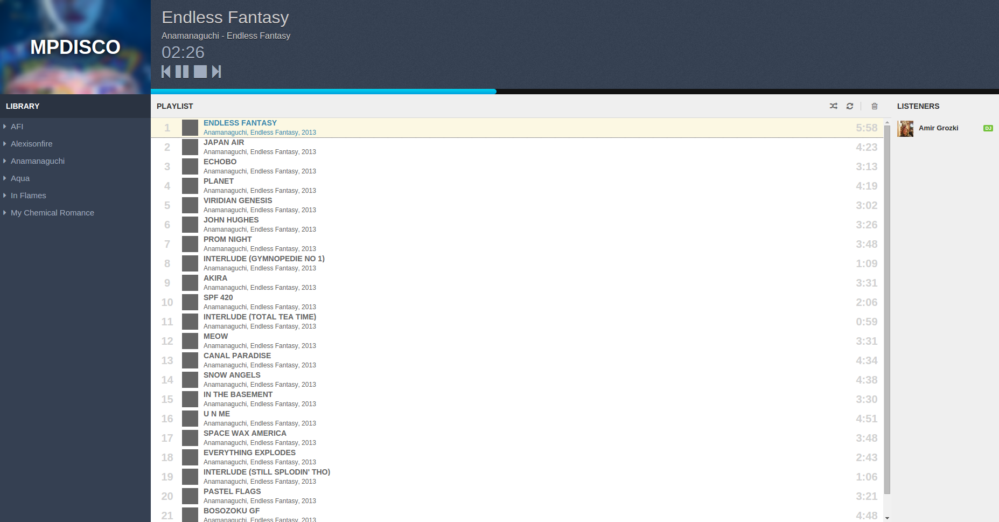

MPDisco is a Node.js-based music server built to let teams and groups control a single music player together.
Right now, accessing the MPDisco server puts each user, after logging in, in a rotating DJ queue. Each user will be given one hour (by default) to control the playlist and music player.
Installation
First off, MPDisco depends on the installation of MPD on the server. Follow the installation instructions to install.
Using NPM, run: npm install mpdisco
Modify config.json to change the music directory, play time for each DJ and session secret (recommended).
Running
To run MPDisco, in the installation directory, use: node index.js
Develop
You can download and fork the MPDisco source code from the GitHub repository.